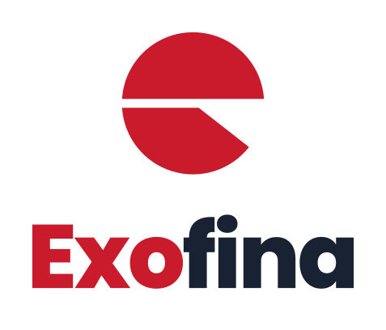
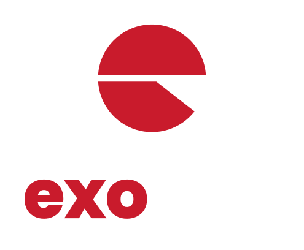
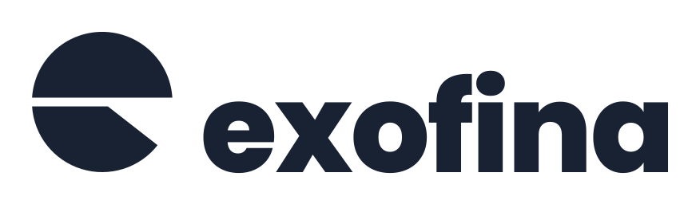
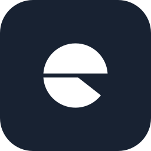
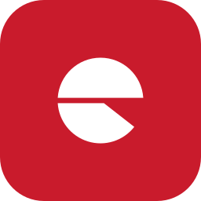
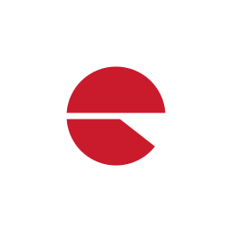
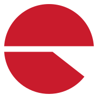

Logiciel de gestion des COOPEC et des IMF, édité par DWAC.
Un « e » taillé dans une pièce : une fente droite, une bouche ouverte vers l'extérieur (exo). De DWAC, il garde le rouge, le disque et les coupes nettes, sans reprendre l'éventail.
Le mot est en Poppins ExtraBold, la police la plus proche du mot DWAC, en approche serrée. « exo » en rouge ; « fina » en Bleu Nuit sur papier clair, en blanc sur fond sombre.





Application
Variante rouge
Variante blanche
48 pxVariante en capitales, comme le mot DWAC.